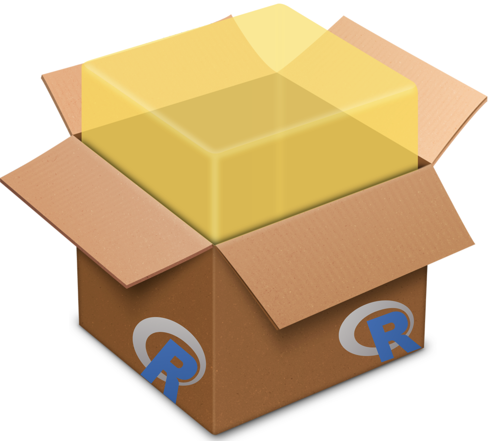
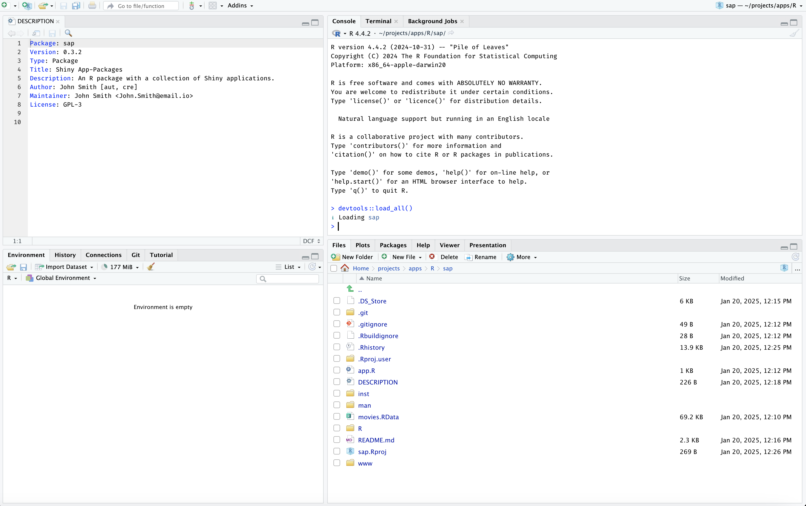
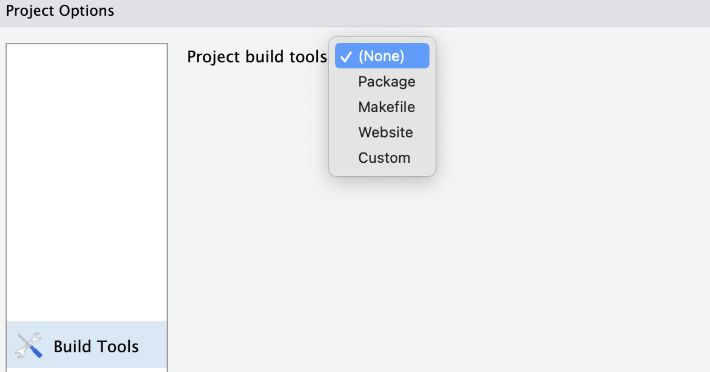
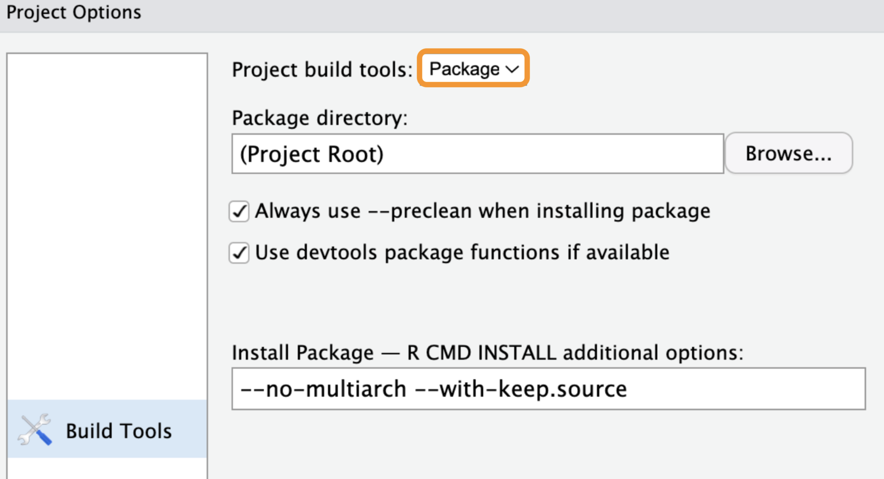
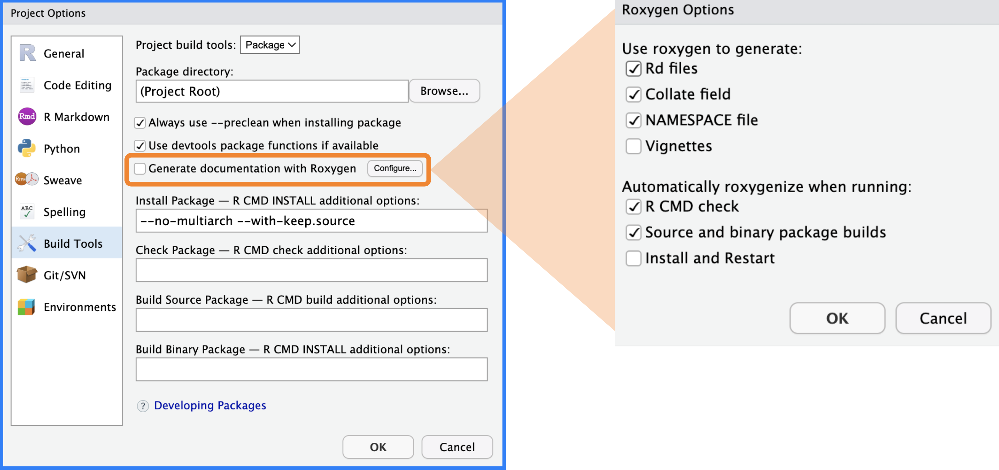
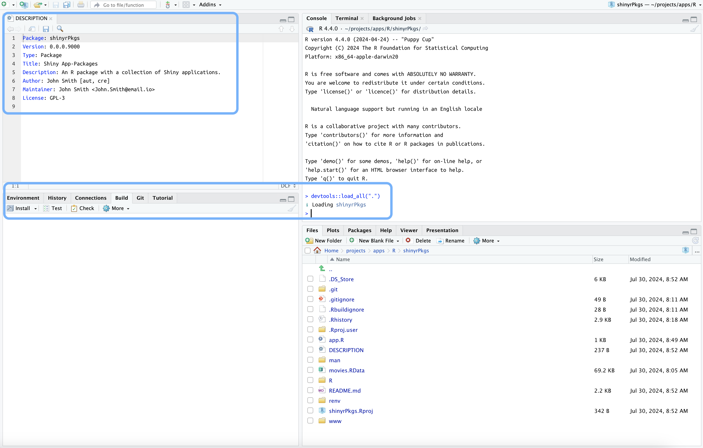

install.packages("devtools")
library(devtools)
devtools::load_all()Packages
This chapter covers the ‘necessary ingredients’ of R packages. We’ll start by covering the differences between Shiny projects, R packages, and Shiny app-packages. Then, we’ll dive into the requirements for 1) creating new Shiny app-packages, and 2) converting Shiny app projects into Shiny app-packages.

Projects, packages, and app-packages
Before we start, we should establish some operational definitions of what is meant by the terms ‘project’, ‘package’, and ‘app-package’.
I’ll use color to differentiate Shiny app projects, R packages, and Shiny app-packages
Shiny Projects: I consider a Shiny app project to be any directory of files requiring R (the binary downloaded from CRAN with a version number and neat names like, ‘R 4.3.1 “Beagle Scouts” released on …’) to execute with an RStudio/Posit workbench project file (
.Rproj) and an application (contained in anapp.Rfile orui.R/server.Rfiles).R Packages: I’ll use the term R package to describe a directory of functions, documentation, or data that can be installed and loaded into an R session. An R package includes the necessary dependency management (
NAMESPACE) and metadata files (DESCRIPTION) and has access to the package development tools in RStudio/Posit Workbench.Shiny app-packages: A Shiny app-package (which you have probably already guessed) is an R package containing a Shiny application. Shiny app-packages have all of the functionality of a standard R Package but also contain the files and folders required to successfully develop, run, and deploy a Shiny app.
Motivation
There are multiple reasons for deciding to develop a Shiny app-package: your Shiny app project might need to be in an R package structure due to specific organizational practices around deploying applications, or maybe you’ve been convinced it will improve the shareability/reproducibility of your Shiny project.
Regardless of the reason, you’ve likely found yourself in one of two circumstances:
You want to develop a new app, but want it structured as an R package.
You’ve already developed a Shiny app project, but now you need to convert it to a Shiny app-packages
The previous chapter covered a few practices to adopt during Shiny development that improve the extensibility of your Shiny app project and make it easier to convert into a Shiny app-package.1
R packages vs. Shiny projects
Below are folder trees with some of the typical files and folders found in R packages (on the left) and the files that currently exist in moviesApp (on the right), our Shiny app project.
<R package>/
├── DESCRIPTION
├── <R package>.Rproj
├── LICENSE
├── LICENSE.md
├── NAMESPACE
├── NEWS.md
├── README.Rmd
├── README.md
├── renv.lock
├── R/
├── man/
├── tests/
├── data/
├── data-raw/
├── vignettes/
├── inst/
└── renv/
moviesApp/
├── DESCRIPTION
├── moviesApp.Rproj
├── R/
│ ├── mod_scatter_display.R
│ ├── mod_var_input.R
│ └── utils.R
├── README.md
├── app.R
├── movies.RData
└── www/
└── shiny.png
4 directories, 9 filesR packages can be easily shared, reused, and reproduced because they all have a familiar structure, and each folder and file plays an essential role in extending R’s capabilities.2
This chapter will cover the minimum requirements for an R package, so you can handle both creating new Shiny app-packages and converting existing Shiny projects into Shiny app-packages.
What makes an R package?
If you’ve done some research on R packages, you’ve probably encountered one (or both) of the following statements,
‘Every package must have a
DESCRIPTION. In fact, it’s the defining feature of a package (RStudio anddevtoolsconsider any directory containingDESCRIPTIONto be a package)’ - R Packages, 2ed (Chapter 9,DESCRIPTION)‘all a project needs to be a package is a directory of
R/files and aDESCRIPTIONfile.’ - Mastering Shiny (Chapter 20, Packages)
The information above should be confusing if you’ve been following along with the code in moviesApp.
We’ve created a Shiny app project (moviesApp) with a DESCRIPTION file and an R/ directory, but it’s not a functioning R package.
As we noted above, a functioning R package can be installed and loaded into an R session and has access to the Build pane in the IDE.
Can we load it with devtools?
Package development kicks off with the load_all() function from devtools, which is similar to calling library() (we’ll cover this function extensively in the devtools chapter). However, when we attempt to load the code in the R/ folder with load_all(), we see the following error:

devtools is looking for the Package field in our DESCRIPTION fileWhere is the ‘Build’ pane?
When opened, functioning R packages have access to the Build pane, which allows developers to quickly load, install, and test their packages.
But when moviesApp is opened, the Build pane is not displayed in the IDE:

moviesApp IDEAs we’ve just learned, the presence of the DESCRIPTION file and an R/ folder are insufficient to turn a Shiny app project into a functioning R package (or a Shiny app-package).
What really makes an R package?
“A project needs a
DESCRIPTIONfile with specific fields, a directory ofR/files, and a properly configured.Rprojfile to be a functioning R package.”
Let’s see how each of these requirements work together to convert the contents of moviesApp from a Shiny project into a Shiny app-package.
DESCRIPTION fields

This section’s code is in the 04_description branch of moviesApp.
The official R documentation3 lists the following required fields for the DESCRIPTION in R packages:
The ‘Package’, ‘Version’, ‘License’, ‘Description’, ‘Title’, ‘Author’, and ‘Maintainer’ fields are mandatory.
Below is an example DESCRIPTION file for moviesApp with the mandatory fields:4
Package: moviesApp
Title: movies app
Version: 0.0.0.9000
Author: John Smith [aut, cre]
Maintainer: John Smith <John.Smith@email.io>
Description: A movie-review Shiny application.
License: GPL-3
- 1
-
Leave an empty final line in the
DESCRIPTION
Author and Maintainer fields
Note that the Author and Maintainer fields require additional information beyond first and last name (i.e., John Smith). These can be created with the utils::person() function:
# Author
utils::person(
given = "John",
family = "Smith",
role = c("aut", "cre"))
## [1] "John Smith [aut, cre]"
# Maintainer
utils::person(
given = "John",
family = "Smith",
email = "John.Smith@email.io")
## [1] "John Smith <John.Smith@email.io>"After adding the mandatory fields to the DESCRIPTION file, devtools::load_all() runs without the previous error, but the IDE still doesn’t display the Build pane:

moviesApp IDEProject Options…
(i.e., the .Rproj file)
.Rproj files are plain text files with various settings for the IDE. We were able to run devtools::load_all() above without the presence of the Build pane because the IDE displays the Build pane after reading the fields in the .Rproj file.
The quickest way to access the fields in the .Rproj file is under Tools > Project Options….
Default options
Tools > Project Options… provide access to the project-level options. For example, fields 2 - 4 are available under General, 5 - 8 affect the Code options, and the final two fields deal with Sweave.

moviesApp.Rproj fieldsmoviesApp.Rproj fileThe default settings were created when we selected the Shiny app project from the New Project Wizard in the last chapter.
Build tools
I’ve placed the .Rproj file from moviesApp with the example .Rproj file from R Packages, (2ed) side-by-side so you can compare them below:5

.Rproj filesmoviesApp.Rproj file and .Rproj file in R Packages, 2edI’ve circled the fields in the .Rproj file that illustrate it’s configured to work with an R package. Note that in moviesApp, the Project build tools are initially set to (None) under Build Tools:

moviesApp.Rproj build toolsmoviesApp.Rproj fileChanging the Project build tools option to Package will set the default Build Tools options:6

The links between the Build Tools options and fields in moviesApp.Rproj are in the figure below:

moviesApp.Rproj build tool fieldsmoviesApp.Rproj fileBuildType: Packagetells the IDEmoviesAppis an R package and triggers the Build pane.PackageUseDevtools: Yeslinks the options in the Build pane to thedevtoolspackage.The
PackageInstallArgsare complicated, but I’ve included some information about them in the callout block below (and you can read more in the official R documentation)The fourth option (
PackageRoxygenize) is available under Generate documentation with Roxygen > Use roxygen to generate:- These options affect the documentation in an R package. To match the example from R Packages, 2ed above, make sure Rd files, Collate field, and NAMESPACE file are selected and click OK.

PackageRoxygenize in .Rproj fileroxygen2 build settingsAfter clicking OK, the IDE will automatically reboot, and the additional fields will be added to the bottom of the moviesApp.Rproj:
Version: 1.0
RestoreWorkspace: Default
SaveWorkspace: Default
AlwaysSaveHistory: Default
EnableCodeIndexing: Yes
UseSpacesForTab: Yes
NumSpacesForTab: 2
Encoding: UTF-8
RnwWeave: Sweave
LaTeX: XeLaTeX
BuildType: Package
PackageUseDevtools: Yes
PackageInstallArgs: --no-multiarch --with-keep.source
PackageRoxygenize: rd,collate,namespace
What is
--no-multiarch --with-keep.source?
--no-multiarch: refers to the option for the package installer to only compile the package for the architecture of the current R session. By default, R tries to compile packages for 32-bit and 64-bit architectures if running in a 64-bit R session on Windows. This flag can help avoid problems if a package can only be compiled on one architecture. Read more here.--with-keep.source: In R, when a function is created, its body can be stored in two ways: 1) as a parsed but unevaluated expression and 2) as a character string containing the function’s source code. By default, only the parsed expression is kept. If–with-keep.sourceis specified, R will also keep the source code as a character string, which can be helpful for debugging and tools that analyze or modify source code. Read more here.
Build pane
When the new session starts, the new project-level options activate the Build pane in the IDE.

When the IDE reboots, I can see the Build pane has been added, and I can check the R package functionality by loading the code with Build > Load All

R/ folderdevtools::load_all()I should see the following in the Console:
ℹ Loading moviesAppThere you have it–moviesApp is a functional R package!
Functional R packages

DESCRIPTION and Build pane)In a functional R package:
The
DESCRIPTIONfile contains the seven mandatory fields (Package,Version,License,Description,Title,Author, andMaintainer), making running the necessary devtools functions possible.The
.Rprojfile contains the three package configuration fields (BuildType: Package,PackageUseDevtools: Yes, andPackageInstallArgs: --no-multiarch --with-keep.source), which makes the Build pane accessible and functional.
Think of the two items above as a two-part process: the DESCRIPTION requires specific fields,7 and the IDE requires .Rproj fields to trigger the Build pane.
Creating Shiny app-packages with create_package()
The Posit documentation lists the following way(s) to create R packages:8
Call
usethis::create_package().In RStudio, do File > New Project > New Directory > R Package. This ultimately calls
usethis::create_package(), so really there’s just one way.
create_package() is a great option if you’re looking for a way to quickly create or convert your Shiny project into a Shiny app-package. In the following sections I’ll cover some suggestions for using create_package().9
New Shiny app-packages
If you haven’t written any code and want to create a new Shiny app-package, create_package() is the quickest way to get started.
First, install devtools:
install.packages("devtools")
library(devtools)devtools automatically loads usethis
Loading required package: usethisAssuming your current working directory is where you want your new Shiny app-package, call usethis::create_package() with the path argument set to getwd()
usethis::create_package(path = getwd())This call launches a series of actions:
First, the active project is set to whatever was given to the
pathargument.✔ Setting active project to 'path/to/newApp'The
R/folder andDESCRIPTION/file are created:✔ Creating 'R/' ✔ Writing 'DESCRIPTION'The
NAMESPACEand.Rprojfiles are created:✔ Writing 'NAMESPACE' ✔ Writing 'newApp.Rproj'The
.Rprojis added to the.Rbuildignorefile, the.Rproj.userfolder is added to the.gitignoreand.Rbuildignorefiles.✔ Adding '^newApp\\.Rproj$' to '.Rbuildignore' ✔ Adding '.Rproj.user' to '.gitignore' ✔ Adding '^\\.Rproj\\.user$' to '.Rbuildignore'A new session is opened from the new
.Rprojfile:✔ Opening 'path/to/newApp/' in new RStudio session
When the new session opens, newApp has the following contents:
newApp/
├── .Rbuildignore
├── .Rproj.user/
├── .gitignore
├── DESCRIPTION
├── NAMESPACE
├── R/
└── newApp.RprojYou’re now free to develop newApp. Store and document any .R files in the R/ folder, edit the DESCRIPTION file with details about the application, read through R Packages and Mastering Shiny, and add the Shiny code to complete your Shiny app-package.
Converting existing Shiny projects
If you already have a Shiny app project that needs to be converted into a Shiny app-package (like the app files stored in the 03_proj-app branch), you can also use create_package(path = getwd()) in your root folder, but I recommend using the following arguments:
DESCRIPTION arguments
fields: these are arguments passed tousethis::use_description(). If thefieldsargument is empty, a boilerplateDESCRIPTIONfile is created (similar to this one).These boilerplate fields in the
DESCRIPTIONwork, but I’ve found some of the fields are unnecessary (i.e., I’ve never neededAuthors@R:orORCID) and inevitably require revision, so I’d prefer to handle this during the creation process (and remove the risk of forgetting to change it later).All fields should be passed in a
list()asfield = 'value'pairs.
usethis::use_description( list(Package = 'moviesApp', Version = '0.0.0.9000', Title = 'movies app', Description = 'A movie-review Shiny application.', "Authors@R" = NULL, Author = utils::person( given = "John", family = "Smith", role = c("aut", "cre")), Maintainer = utils::person( given = "John", family = "Smith", email = "John.Smith@email.io"), License = "GPL-3"))A few fields require specially formatted values (see the
utils::person()examples below).utils::person("John", "Smith", email = "John.Smith@email.io", role = c("aut", "cre"))[1] "John Smith <John.Smith@email.io> [aut, cre]"
Two additional arguments from
use_description()are passed tocreate_package():check_name: verifies your Shiny app-package name is valid for CRAN, so we can set this toFALSE(unless you’re planning on submitting to CRAN)roxygen2: isTRUEby default and adds the fields required to useroxygen2(which I won’t cover here because we’ll cover documentation in-depth in a future chapter).
WARNING: Don’t use
usethis::create_package('.')!
When converting your existing Shiny app project into a Shiny app-package with usethis::create_package(), don’t use '.' in the path argument:
usethis::create_package('.')This will return the following warning about creating nested projects, and ask if you want to proceed anyway:
New project 'moviesApp' is nested inside an existing project
'./', which is rarely a good idea. If this is unexpected,
the here package has a function,
`here::dr_here()` that reveals why './' is regarded as a
project.
Do you want to create anyway?
1: Yes
2: No way
3: Not nowWe can avoid this warning altogether by passing getwd() to the path argument, so I recommend cancelling the project creation:
Selection: 2
Error: Cancelling project creation.IDE arguments
rstudio: adds the necessary Build Tools fields in the.Rprojfile (leave asTRUE)open: can be set toFALSEbecause we don’t need RStudio/Posit Workbench to open in a new session
usethis::create_package(
path = getwd(),
fields = list(Package = 'moviesApp',
Version = '0.0.0.9000',
Title = 'movies app',
Description = 'A movie-review Shiny application.',
"Authors@R" = NULL,
Author = utils::person(
given = "John",
family = "Smith",
email = "John.Smith@email.io",
role = c("aut", "cre")),
Maintainer = utils::person(
given = "John",
family = "Smith",
email = "John.Smith@email.io"),
License = "GPL-3"),
roxygen = TRUE,
check_name = FALSE,
rstudio = TRUE,
open = FALSE)After running usethis::create_package() with the arguments above, the IDE will present us with a few prompts to confirm:
Overwrite pre-existing file 'DESCRIPTION'?Overwrite pre-existing file 'moviesApp.Rproj'?The Shiny app-package structure is below:
├── DESCRIPTION
├── NAMESPACE
├── R
│ ├── mod_scatter_display.R
│ ├── mod_var_input.R
│ └── utils.R
├── README.md
├── app.R
├── movies.RData
├── moviesApp.Rproj
└── www
└── Shiny.png
3 directories, 10 filesThe DESCRIPTION file (shown below) has a few additional fields (Encoding, Roxygen, and RoxygenNote) we didn’t include when we converted moviesApp above, but we will cover these in the upcoming chapters.
Package: moviesApp
Title: movies app
Version: 0.0.0.9000
Author: John Smith <John.Smith@email.io> [aut, cre]
Maintainer: John Smith <John.Smith@email.io>
Description: A movie-review Shiny application.
License: GPL-3
Encoding: UTF-8
Roxygen: list(markdown = TRUE)
RoxygenNote: 7.2.3
- 1
-
Leave an empty final line in the
DESCRIPTION
This section’s code is in the 06_create-package branch of moviesApp.
Recap
This chapter has covered the mandatory fields in the DESCRIPTION file and the R package configuration fields in .Rproj. We also covered creating and converting Shiny app projects using the usethis::create_package() function.
Recap: Packages!
The
DESCRIPTIONfile ultimately controls whether you have a functional Shiny app-package.- The mandatory fields are
Package,Version,License,Description,Title,Author, andMaintainer.
- The mandatory fields are
usethis::create_package()can be used to create a new R package and to convert an existing Shiny project into a Shiny app-package.The IDE reads RStudio (
.Rproj) files and determines R session settings at the project-level (i.e., working directory, workspace, history, code formatting, etc.)- Package development settings can be accessed via Project Options > Build Tools.
In the next chapter, I’ll cover how you can quickly Load, Document, and Install your package!
end packages.qmd
Shiny app project features are covered in this section of the Shiny chapter.↩︎
Fortunately, Shiny app-packages don’t require all the files and folders displayed in the folder tree to gain the functionality and benefits of an R package.↩︎
The mandatory fields are covered in Writing R Extensions, ‘The DESCRIPTION file’↩︎
Always leave an empty final line in the
DESCRIPTIONfile.↩︎.Rprojfiles are covered in the What makes an RStudio Project? section of R Packages (2 ed)↩︎The initial Build Tools settings (i.e., (None)) should help explain the absence of any R package development fields in the
moviesApp.Rprojwhen we compared it to the version in R Packages, 2ed (i.e.,BuildType,PackageUseDevtools,PackageInstallArgs, andPackageRoxygenize).↩︎The mandatory fields prevent the
devtoolserror we encountered above.↩︎This information comes from the Writing R Packages documentation for Posit Workbench.↩︎
usethis::create_package()is covered in the ‘Fundamental development workflows’ chapter of R Packages, 2ed↩︎